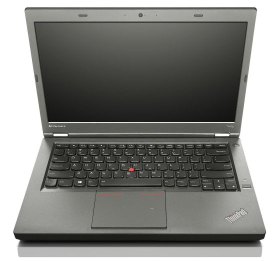
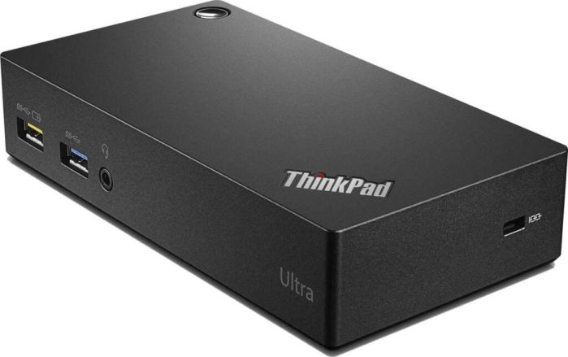
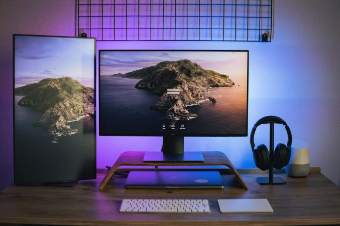

Mis nuevos juguetes
A través de este podcast que escuché hace algún tiempo, siempre me quedó el gusanillo de tener uno, y eso que estoy muy contento con mi Lenovo Ideapad Y700, pero siempre me quedó esa espina clavada…
A parte de que también me apunté a este canal de Thinkpads de Telegram y eso ya fue lo definitivo. Te tengo que avisar de que si a mí me llaman friki, los que forman parte de este canal lo son a un nivel que no te puedes imaginar; para que veáis el nivel que tienen, hay miembros de este canal que tienen casi todos los modelos de Thinkpads habidos y por haber, solo por el mero hecho de tenerlos 😲 Algunos sí que los utilizan, pero no todos.
Ya me veis, leyendo todo lo que van diciendo y con unas ganas cada vez más grandes de tener uno, aunque solo fuera para tenerlo. Y aquí es donde empezó todo…
Pregunté cuál era el modelo más famoso, el más llamativo o el más icónico de los que había disponibles y me dijeron que si lo que te gusta es cacharrear, el mejor era el ThinkPad T440p.

Ahí me tenéis, comprando a un compañero del canal un T440p con las siguientes características:
- CPU: i7 4700mq
- RAM: 16Gb (2x8Gb)
- SSD 256Gb
- El panel no le funciona
- Con el cargador
- Sin batería
- Y le faltaba una tecla
La pantalla estaba rota y sin batería, pero como hay tanto material para este portátil, pues no había problema, y a él que me fui.
Cuando me llegó, la sensación fue impresionante, unos acabados, no sé, un todo. Lo conecté a un monitor y funcionaba perfectamente, con el identificativo logo de ThinkPad al inicio.
Ahora solamente faltaba solucionar el problema de la pantalla, donde pensaba que sería lo más difícil. Pero la realidad es que fue más fácil de lo que yo me pensaba. Es muy fácil cambiar cualquier cosa en este portátil. Para que os hagáis una idea, nada más llegar, le desmonté el SSD, la CPU (para su limpieza y nueva pasta térmica), y el ventilador.
Este ordenador parece un mecano. Se puede desmontar todo, pero todo.
Con respecto al panel que no me funcionaba, volví a pedir ayuda en el canal y me aconsejaron que ya que lo tenía, podía hacerle un par más de modificaciones que son:
- Panel T440p
- Panel táctil T440p, aunque a la hora de su instalación, con Windows hay muchos problemas porque no coge el driver correctamente, pero como le iba a instalar GNU/Linux, pues no me preocupaba.
Cuando me llegó todo el material, como digo, el portátil se puede desmontar fácilmente. Le sustituí la pantalla sin ningún problema, y eso que al principio te da un poco de respeto, pero cuando ves que la construcción del equipo está hecha para que todo sea fácil de cambiar y sustituir, pues el nerviosismo desaparece.
Después de esta sustitución, ya tenía un nuevo ThinkPad T440p como nuevo (aún me falta la batería), pero como iba a estar conectado a la corriente, pues aunque me gustaría conseguir una batería para tener el modelo completo…
Además, en el canal, un compañero que había comprado un teclado para este modelo, porque tenía un par de teclas rotas en su portátil, y como le sobraban el resto, pues le pedí si me podía facilitar la que me faltaba a mí, y no hubo ningún problema. Además, como ya he comentado antes, todo en este portátil es fácilmente desmontable, incluidas las teclas y el teclado.
Si buscas información de este modelo, mucha gente aún lo usa en 2023 porque es muy versátil y se le pueden hacer muchas modificaciones. Una de ellas, y la que me ha dejado más sorprendido, ha sido la que se puede ver aquí, donde le ponen una CPU que con solo ver las especificaciones te tira para atrás. También he visto gente que ha llegado a decir que le había puesto un Xeon a este portátil, cambio de la BIOS por una BIOS libre (Coreboot) o la modifican (aquí) para liberarla y poder usar diferente hardware (sobre todo tarjetas Wi-Fi) que por defecto están bloqueadas.
Lo que yo digo: lo que no se puede hacer con este portátil es que no se puede. No lo intentes porque a lo mejor lo estropeas.
Hasta aquí hemos llegado con mi nuevo juguete… ¿o no?
Pues será que no, porque como dicen en el canal, cuando empiezas ya no puedes parar, y esto es lo que me pasó. Y más cuando dicen que el modelo que va a tener más hype estos próximos años será el T480, porque según parece, la garantía que tienen está a punto de finalizar y por esa misma cuestión las empresas van a hacer el cambio y el mercado se satura. Y doy fe de ello in situ.
Pero esta vez, en el canal no había nadie que le sobrara este modelo, y me fui a revisar eBay, donde hay un mundo con respecto a los ThinkPads. Así que pregunté y me aconsejaron un par de vendedores que tienen modelos a buen precio (pero en subasta, que como sabéis, el portátil lo puedes conseguir o muy barato o muy caro).
Al final, pude conseguir uno a buen precio con las siguientes características:
- CPU: i5 8350U
- RAM: 8Gb (1x8)
- M.2 SSD: 256Gb
- Con el cargador
- Sin batería
- Panel táctil, pero con algunos problemas de funcionamiento
De nuevo, a la espera de mi nuevo juguete (que esta vez y gracias a UPS Parcel —qué empresa 😤— llegó una semana más tarde, pero ya lo tenía). Y tuve la misma sensación que cuando recibí el T440p: una sensación como de niño con zapatos nuevos y de vuelta a las modificaciones.
En el canal me aconsejaron la primera y más básica: el cambio de panel por uno que es muy aconsejado en Reddit, porque reduce el consumo de energía de la batería con la mejora que ello conlleva. Y además, si quieres, este modelo (siempre que hagas las modificaciones pertinentes: panel y cable) se le puede poner una pantalla de 2K, pero eso gastaría mucha batería y visualmente no se vería ninguna mejora apreciable.
A parte del panel, también le cambio las siguientes piezas (no es tan modificable como el T440p, pero…):
El nuevo cable para el SSD lo he hecho porque había comprado uno nuevo que lo quería utilizar en el portátil, y el M.2 lo quería hacer servir para el servidor y utilizarlo para las copias de seguridad de este (que ya explicaré en otro artículo).
Después de todo lo que le he hecho (que también me ha resultado muy fácil de cambiar), y eso que dicen que es uno de los últimos que tiene esta facilidad porque los nuevos no la tienen, tengo un ThinkPad T480 nuevecito, a falta de una batería y un teclado en castellano, aunque esto último no es muy importante porque si le conectas un teclado externo ya no usarás el teclado del portátil.
Aquí estamos con mis nuevos juguetes, aunque este último (T480) estoy pensando en usarlo cuando se me muera el Lenovo Y700 que tengo últimamente y tenerlo con un dock.

Para así tenerlo con una pantalla mínimamente grande o algo parecido al setup que nos muestra Lorenzo de atareao.es:

Pero todo esto son planes de futuro que Dios dirá…
Hasta aquí la historia de los 2 nuevos juguetes que han llegado a casa. Espero que no se me crucen los cables y compre uno más, porque si no me veo durmiendo en la calle.
nota: ¿Queréis un consejo? No escuchéis ningún podcast de los que seguís que hable del cambio de equipo. Porque si no os empezarán a surgir ideas contrarias a las que, en un principio, habíais tomado. Hacedme caso.
Yo ya tenía la idea de cambiar (cuando se me muera el portátil que tengo ahora) por el T480 que he conseguido junto con un dock, y va Lorenzo - Atareao.es y me suelta que se ha cambiado el portátil que tenía por un Slimbook One, en pocas palabras, un Tiny, y solo falta escuchar eso y los motivos por los que lo ha hecho —muy lógicos todos ellos— para empezar mis dudas sobre si la decisión que tenía pensada es la correcta o si es mejor ir a por un Tiny acoplado a un monitor: menos espacio ocuparía y menos enchufes necesitaría.
Gracias, Lorenzo. ☹️